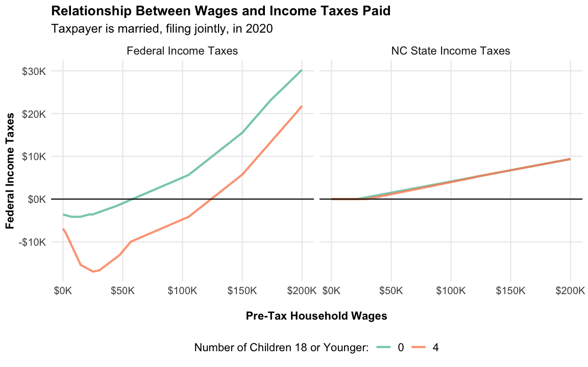
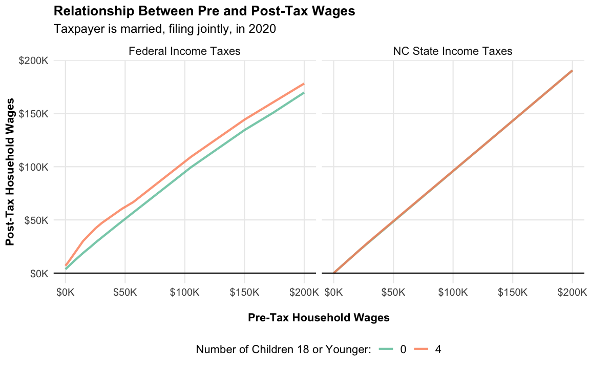
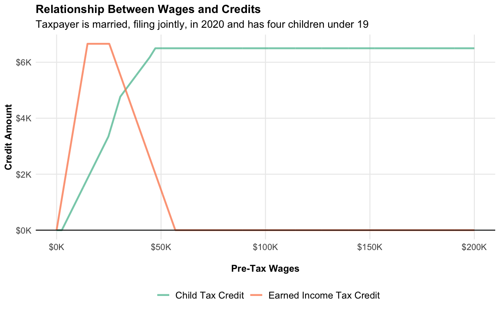

Calculating Federal and State Income Taxes
Shane Orr
Source:vignettes/using-usincometaxes.Rmd
using-usincometaxes.RmdThis article presents two use cases for usincometaxes. The first shows users how to estimate income taxes from a data frame containing financial information and other characteristics of tax payer units. This income could come from surveys such as the Consumer Expenditure survey or the Panel Study of Income Dynamics survey. The second use case focuses on running simulations.
Calculating income taxes from survey data
For the first example we will use an internal data set called taxpayer_finances. The data is randomly generated and formatted for use with usincometaxes. Guidance on formatting data can be found in the Description of Input Columns article.
The data set contains financial and other household characteristics that help estimate income taxes.
data(taxpayer_finances)
# with of scroll box for tables
scroll_width <- "800px"
taxpayer_finances %>%
head() %>%
kable() %>%
scroll_box(width = scroll_width)| id_number | tax_year | filing_status | state | primary_age | spouse_age | num_dependents | num_dependents_thirteen | num_dependents_seventeen | num_dependents_eitc | primary_wages | spouse_wages | dividends | interest | short_term_capital_gains | long_term_capital_gains |
|---|---|---|---|---|---|---|---|---|---|---|---|---|---|---|---|
| 1 | 2000 | single | NC | 35 | 0 | 4 | 4 | 4 | 4 | 22701.02 | 0.00 | 6658.21 | 3375.59 | 1002.40 | 4390.18 |
| 2 | 2000 | single | NC | 37 | 0 | 3 | 3 | 3 | 3 | 51359.17 | 0.00 | 2688.67 | 9005.15 | 304.71 | 2044.23 |
| 3 | 2000 | married, jointly | NC | 47 | 46 | 0 | 0 | 0 | 0 | 8979.92 | 34126.74 | 500.50 | 7208.65 | 510.03 | 1500.43 |
| 4 | 2000 | married, jointly | NC | 39 | 41 | 1 | 1 | 1 | 1 | 47239.44 | 36538.55 | 2559.99 | 2148.39 | 656.94 | 1226.81 |
| 5 | 2000 | married, jointly | NC | 40 | 45 | 1 | 1 | 1 | 1 | 13756.33 | 3803.08 | 800.20 | 4623.35 | 571.34 | 1904.82 |
| 6 | 2000 | married, jointly | NC | 34 | 34 | 4 | 4 | 4 | 4 | 10499.88 | 70023.80 | 10287.11 | 2124.70 | 833.24 | 2098.14 |
Each row in the data set is a tax paying unit. Thus, each row files one tax return. Columns represent items reported on tax returns that impact taxes. Of course, the information in the data set does not represent everything people report on tax returns. For this reason, the income tax calculations are simply estimates.
We call taxsim_calculate_taxes() to estimate federal and state income taxes for each tax paying unit. taxsim_calculate_taxes() sends the data to the NBER’s TAXSIM 32 program for calculation and returns the results as a data frame.
We are only interested in federal and state tax liabilities, not line item credits and deduction, so we are using return_all_information = FALSE.
family_taxes <- taxsim_calculate_taxes(
.data = taxpayer_finances,
return_all_information = FALSE
)
family_taxes %>%
head() %>%
kable()| id_number | federal_taxes | state_taxes | fica_taxes | federal_marginal_rate | state_marginal_rate | fica_rate |
|---|---|---|---|---|---|---|
| 1 | 431.90 | 1103.82 | 3473.25 | 15 | 7 | 15 |
| 2 | 7136.98 | 3248.00 | 7857.93 | 28 | 7 | 15 |
| 3 | 5905.95 | 2785.11 | 6595.06 | 15 | 7 | 15 |
| 4 | 14593.90 | 5178.12 | 12817.88 | 28 | 7 | 15 |
| 5 | 860.85 | 717.42 | 2686.53 | 15 | 6 | 15 |
| 6 | 12211.58 | 4857.98 | 12319.87 | 28 | 7 | 15 |
The id_number column is required for any input data frame used in taxsim_calculate_taxes. This column is also returned in the output data frame containing tax calculations, allowing us to link the input and output data frames.
income_and_taxes <- taxpayer_finances %>%
left_join(family_taxes, by = 'id_number')
income_and_taxes %>%
head() %>%
kable() %>%
scroll_box(width = scroll_width)| id_number | tax_year | filing_status | state | primary_age | spouse_age | num_dependents | num_dependents_thirteen | num_dependents_seventeen | num_dependents_eitc | primary_wages | spouse_wages | dividends | interest | short_term_capital_gains | long_term_capital_gains | federal_taxes | state_taxes | fica_taxes | federal_marginal_rate | state_marginal_rate | fica_rate |
|---|---|---|---|---|---|---|---|---|---|---|---|---|---|---|---|---|---|---|---|---|---|
| 1 | 2000 | single | NC | 35 | 0 | 4 | 4 | 4 | 4 | 22701.02 | 0.00 | 6658.21 | 3375.59 | 1002.40 | 4390.18 | 431.90 | 1103.82 | 3473.25 | 15 | 7 | 15 |
| 2 | 2000 | single | NC | 37 | 0 | 3 | 3 | 3 | 3 | 51359.17 | 0.00 | 2688.67 | 9005.15 | 304.71 | 2044.23 | 7136.98 | 3248.00 | 7857.93 | 28 | 7 | 15 |
| 3 | 2000 | married, jointly | NC | 47 | 46 | 0 | 0 | 0 | 0 | 8979.92 | 34126.74 | 500.50 | 7208.65 | 510.03 | 1500.43 | 5905.95 | 2785.11 | 6595.06 | 15 | 7 | 15 |
| 4 | 2000 | married, jointly | NC | 39 | 41 | 1 | 1 | 1 | 1 | 47239.44 | 36538.55 | 2559.99 | 2148.39 | 656.94 | 1226.81 | 14593.90 | 5178.12 | 12817.88 | 28 | 7 | 15 |
| 5 | 2000 | married, jointly | NC | 40 | 45 | 1 | 1 | 1 | 1 | 13756.33 | 3803.08 | 800.20 | 4623.35 | 571.34 | 1904.82 | 860.85 | 717.42 | 2686.53 | 15 | 6 | 15 |
| 6 | 2000 | married, jointly | NC | 34 | 34 | 4 | 4 | 4 | 4 | 10499.88 | 70023.80 | 10287.11 | 2124.70 | 833.24 | 2098.14 | 12211.58 | 4857.98 | 12319.87 | 28 | 7 | 15 |
Now we have a single data frame containing both wages and income tax liabilities. Let’s take a look at the relationship between wages and estimated federal income taxes. The colors represent the number of children 18 or younger.
# custom theme for all plots in the vignette
plt_theme <- function() {
theme_minimal() +
theme(
legend.text = element_text(size = 11),
axis.text = element_text(size = 10),
axis.title=element_text(size=11,face="bold"),
strip.text = element_text(size = 11),
panel.grid.minor = element_blank(),
plot.title = element_text(face = "bold"),
plot.subtitle = element_text(size = 12),
legend.position = 'bottom'
)
}
# color palettes for number of children
dep_color_palette <- rev(c('#4B0055','#353E7C','#007094','#009B95','#00BE7D','#96D84B'))
income_and_taxes %>%
mutate(
tax_unit_income = primary_wages + spouse_wages,
num_dependents_eitc = factor(num_dependents_eitc, levels = as.character(0:5)),
filing_status = tools::toTitleCase(filing_status)
) %>%
ggplot(aes(tax_unit_income, federal_taxes, color = num_dependents_eitc)) +
geom_point(alpha = .5) +
scale_x_continuous(labels = scales::label_dollar(scale = .001, suffix = "K"), limits = c(0, 200000)) +
scale_y_continuous(labels = scales::label_dollar(scale = .001, suffix = "K"), limits = c(-10000, 50000)) +
scale_color_discrete(type = dep_color_palette) +
facet_grid(rows = vars(filing_status), cols = vars(tax_year)) +
labs(
title = "Federal Income Taxes by Filing Status, Year, and Number of Children",
x = "\nHousehold Wages",
y = "Federal Income Taxes"
) +
plt_theme() +
guides(color = guide_legend(title = "Number of Childern 18 or Younger", title.position = "top", byrow = TRUE))
#> Warning: Removed 159 rows containing missing values (geom_point).
The plots shows what we would expect: higher income families pay more in taxes and households pay less the more children they have. We also see the reduction in federal marginal tax rates from 2000 to 2020, as shown by the decrease in income tax liabilities when comparing the two years.
Income tax simulations
Association between income taxes paid and household wages
An additional use of usincometaxes is to run simulations. This could be as simple as plotting the relationship between wages and income taxes paid. To do this, we first need to create a data set that holds everything constant except for wages. The code block below does this, except it also creates different data sets for households with zero and four children 18 or younger, so we can compare differences on this characteristic as well.
# calculate taxes from 0 to 200,000 in wages
wage_linespace <- seq(0, 200000, 100)
n_kids <- 4
base_family_income <- data.frame(
tax_year = 2020,
filing_status = 'married, jointly',
state = 'NC',
primary_age = 40,
spouse_age = 40,
num_dependents = n_kids,
num_dependents_thirteen = n_kids,
num_dependents_seventeen = n_kids,
num_dependents_eitc = n_kids,
primary_wages = wage_linespace,
spouse_wages = 0
)
# create an additional data se twith no dependents and add it to the original
family_income <- base_family_income %>%
bind_rows(
# make all numeber of dependent columns 0
base_family_income %>%
mutate(across(starts_with('num'), ~0))
) %>%
# add unique ID to each row
mutate(id_number = row_number()) %>%
select(id_number, everything())
family_income %>%
head() %>%
kable() %>%
scroll_box(width = scroll_width)| id_number | tax_year | filing_status | state | primary_age | spouse_age | num_dependents | num_dependents_thirteen | num_dependents_seventeen | num_dependents_eitc | primary_wages | spouse_wages |
|---|---|---|---|---|---|---|---|---|---|---|---|
| 1 | 2020 | married, jointly | NC | 40 | 40 | 4 | 4 | 4 | 4 | 0 | 0 |
| 2 | 2020 | married, jointly | NC | 40 | 40 | 4 | 4 | 4 | 4 | 100 | 0 |
| 3 | 2020 | married, jointly | NC | 40 | 40 | 4 | 4 | 4 | 4 | 200 | 0 |
| 4 | 2020 | married, jointly | NC | 40 | 40 | 4 | 4 | 4 | 4 | 300 | 0 |
| 5 | 2020 | married, jointly | NC | 40 | 40 | 4 | 4 | 4 | 4 | 400 | 0 |
| 6 | 2020 | married, jointly | NC | 40 | 40 | 4 | 4 | 4 | 4 | 500 | 0 |
Now, we will calculate federal and state income taxes for our simulated data set. Note that return_all_information = TRUE. This allows us to examine credit amounts like the Child Tax Credit and Earned Income Tax Credit (EITC).
family_income_taxes <- taxsim_calculate_taxes(
.data = family_income,
return_all_information = TRUE
)
#> Warning: One or more parsing issues, see `problems()` for details
family_income_taxes %>%
head() %>%
kable() %>%
scroll_box(width = scroll_width)| id_number | federal_taxes | state_taxes | fica_taxes | federal_marginal_rate | state_marginal_rate | fica_rate | federal_agi | ui_agi | soc_sec_agi | zero_bracket_amount | personal_exemptions | exemption_phaseout | deduction_phaseout | itemized_deductions | federal_taxable_income | tax_on_taxable_income | exemption_surtax | general_tax_credit | child_tax_credit_adjusted | child_tax_credit_refundable | child_care_credit | eitc | amt_income | amt_liability | fed_income_tax_before_credit | fica | state_household_income | state_rent_expense | state_agi | state_exemption_amount | state_std_deduction_amount | state_itemized_deducation | state_taxable_income | state_property_tax_credit | state_child_care_credit | state_eitc | state_total_credits | state_bracket_rate | self_emp_income | medicare_tax_unearned_income | medicare_tax_earned_income | cares_recovery_rebate |
|---|---|---|---|---|---|---|---|---|---|---|---|---|---|---|---|---|---|---|---|---|---|---|---|---|---|---|---|---|---|---|---|---|---|---|---|---|---|---|---|---|---|---|
| 1 | -8000 | 0 | 0.0 | -45 | 0 | 15.3 | 0 | 0 | 0 | 24800 | 0 | 0 | 0 | 0 | 0 | 0 | 0 | 0 | 0 | 0 | 0 | 0 | 0 | 0 | 0 | 0.0 | 0.01 | 0 | 0.01 | 0 | 21500 | 0 | 0 | 0 | 0 | 0 | 0 | 0 | 0 | 0 | 0 | 8000 |
| 2 | -8045 | 0 | 15.3 | -45 | 0 | 15.3 | 100 | 0 | 0 | 24800 | 0 | 0 | 0 | 0 | 0 | 0 | 0 | 0 | 0 | 0 | 0 | 45 | 100 | 0 | 0 | 15.3 | 101.01 | 0 | 100.01 | 0 | 21500 | 0 | 0 | 0 | 0 | 0 | 0 | 0 | 100 | 0 | 0 | 8000 |
| 3 | -8090 | 0 | 30.6 | -45 | 0 | 15.3 | 200 | 0 | 0 | 24800 | 0 | 0 | 0 | 0 | 0 | 0 | 0 | 0 | 0 | 0 | 0 | 90 | 200 | 0 | 0 | 30.6 | 201.01 | 0 | 200.01 | 0 | 21500 | 0 | 0 | 0 | 0 | 0 | 0 | 0 | 200 | 0 | 0 | 8000 |
| 4 | -8135 | 0 | 45.9 | -45 | 0 | 15.3 | 300 | 0 | 0 | 24800 | 0 | 0 | 0 | 0 | 0 | 0 | 0 | 0 | 0 | 0 | 0 | 135 | 300 | 0 | 0 | 45.9 | 301.01 | 0 | 300.01 | 0 | 21500 | 0 | 0 | 0 | 0 | 0 | 0 | 0 | 300 | 0 | 0 | 8000 |
| 5 | -8180 | 0 | 61.2 | -45 | 0 | 15.3 | 400 | 0 | 0 | 24800 | 0 | 0 | 0 | 0 | 0 | 0 | 0 | 0 | 0 | 0 | 0 | 180 | 400 | 0 | 0 | 61.2 | 401.01 | 0 | 400.01 | 0 | 21500 | 0 | 0 | 0 | 0 | 0 | 0 | 0 | 400 | 0 | 0 | 8000 |
| 6 | -8225 | 0 | 76.5 | -45 | 0 | 15.3 | 500 | 0 | 0 | 24800 | 0 | 0 | 0 | 0 | 0 | 0 | 0 | 0 | 0 | 0 | 0 | 225 | 500 | 0 | 0 | 76.5 | 501.01 | 0 | 500.01 | 0 | 21500 | 0 | 0 | 0 | 0 | 0 | 0 | 0 | 500 | 0 | 0 | 8000 |
As before, let’s merge our tax data with the original input data set.
Now, let’s look at the relationship between household wages and estimated income tax liabilities.
family_income_long <- family_income %>%
select(primary_wages, num_dependents_eitc, federal_taxes, state_taxes) %>%
pivot_longer(cols = c('federal_taxes', 'state_taxes'),
names_to = 'jurisdiction', values_to = 'taxes_paid') %>%
mutate(
jurisdiction = recode(jurisdiction, 'federal_taxes' = 'Federal Income Taxes', 'state_taxes' = 'NC State Income Taxes'),
num_dependents_eitc = factor(num_dependents_eitc, levels = as.character(0:5)),
post_tax_wages = primary_wages - taxes_paid
)
# primary_wages, taxes_paid, color = as.character(num_dependents_eitc)
taxes_line_plot <- function(.data, x_var, y_var, color_var) {
ggplot(.data, aes({{x_var}}, {{y_var}}, color = {{color_var}})) +
geom_line(size = 1, alpha = .8) +
geom_hline(yintercept = 0) +
scale_x_continuous(labels = scales::label_dollar(scale = .001, suffix = "K")) +
scale_y_continuous(labels = scales::label_dollar(scale = .001, suffix = "K")) +
scale_color_brewer(type = 'seq', palette = 'Set2') +
plt_theme()
}
taxes_line_plot(family_income_long, primary_wages, taxes_paid, num_dependents_eitc) +
facet_wrap(vars(jurisdiction)) +
labs(
title = "Relationship Between Wages and Income Taxes Paid",
subtitle = "Taxpayer is married, filing jointly, in 2020",
x = "\nPre-Tax Household Wages",
y = "Federal Income Taxes",
color = 'Number of Children 18 or Younger:'
)
Note that North Carolina had a flat tax of 5.25% in 2020. That’s why their taxes increase linearly.
Relationship Between Pre and Post-Tax Wages
We’ll create a additional plot comparing pre-tax and post-tax household wages.
taxes_line_plot(family_income_long, primary_wages, post_tax_wages, num_dependents_eitc) +
facet_wrap(vars(jurisdiction)) +
labs(
title = "Relationship Between Pre and Post-Tax Wages",
subtitle = "Taxpayer is married, filing jointly, in 2020",
x = "\nPre-Tax Household Wages",
y = "Post-Tax Hosuehold Wages",
color = 'Number of Children 18 or Younger:'
)
Child Tax Credit and Earned Income Tax Credit (EITC)
As noted previously, setting return_all_information = TRUE lets us retrieve additional output. Included in this additional output are amounts for the Child Tax Credit and EITC. Let’s look at the amounts for both credits, while varying household wages. The values reflect a household with four children 18 or younger.
tax_items_mapping <- c(
eitc = 'Earned Income Tax Credit',
child_tax_credit = 'Child Tax Credit'
)
family_income %>%
filter(num_dependents_eitc == 4) %>%
mutate(child_tax_credit = child_tax_credit_adjusted + child_tax_credit_refundable) %>%
select(primary_wages, federal_taxes, eitc, child_tax_credit) %>%
pivot_longer(cols = names(tax_items_mapping), names_to = 'tax_item', values_to = 'amount') %>%
mutate(tax_item = recode(tax_item, !!!tax_items_mapping)) %>%
taxes_line_plot(primary_wages, amount, tax_item) +
labs(
title = "Relationship Between Wages and Credits",
subtitle = "Taxpayer is married, filing jointly, in 2020 and has four children under 19",
x = "\nPre-Tax Wages",
y = "Credit Amount",
color = NULL
)